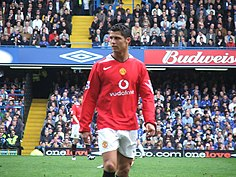
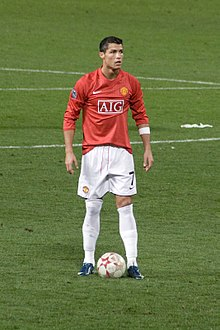
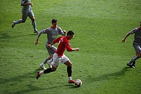
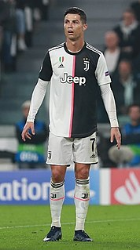
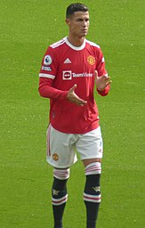

Carrera en clubes
Sporting C. P.
Su gran desarrollo futbolístico le acabó llevando a jugar sus primeros minutos como profesional cuando contaba con 17 años de edad, en el partido de clasificación para la Liga de Campeones de la UEFA del 14 de agosto de 2002 frente al Inter de Milán. Su debut en Primera División se produjo el 30 de septiembre frente al Sporting Clube de Braga en la que su equipo cayó derrotado por 4-2. Sin embargo, en su segundo partido de Liga jugado el 7 de octubre ante el Moreirense, Cristiano anotó dos goles en el 3-0 final, que causó entre afición y prensa una gran impresión, pasando a formar parte del grupo de habituales del primer equipo del Sporting. Con su gol, se convirtió en el goleador más joven de la historia de Sporting, con 17 años y 8 meses. También se convirtió en el primer jugador en jugar en una temporada en los juveniles del Sporting, en el equipo filial y en el primer equipo. En 2002, estuvo cerca de firmar por la Juventus mediante un intercambio por el chileno Marcelo Salas, pero este último desestimó jugar en el fútbol portugués.71 Fue observado por primera vez por Gérard Houllier, el gerente del Liverpool, pero se negó a ficharlo por considerarlo demasiado joven y porque aún tenía que desarrollar más sus habilidades. Sin embargo, en el verano de 2003, el Sporting y el Manchester United disputaron un encuentro amistoso con motivo de la inauguración del Estadio José Alvalade para la Eurocopa 2004. En ese partido, el joven extremo cuajó una magnífica actuación que asombraría tanto a los propios jugadores rivales como a su entrenador Alex Ferguson, que consiguió el traspaso del portugués al club inglés poco después en ese mismo verano.
.jpg)
Manchester United F. C.
Desarrollo e irrupción en Inglaterra (2003-2007)
Para la temporada 2003-04, Ronaldo se convirtió en el primer jugador portugués en la historia del Manchester United. Ronaldo firmó un contrato con el club para 5 años al precio de €12 millones de euros. El precio de su fichaje lo convirtió en el traspaso por un jugador juvenil más caro en la historia del fútbol inglés en ese momento. A pesar de haber pedido el número 28, el que tenía en el Sporting de Portugal, el entrenador Sir Alex Ferguson le asignó el dorsal «7» que había dejado el excapitán del Mánchester, David Beckham, y que había sido utilizado por leyendas del club como George Best y Éric Cantona. Utilizar el número 7 le sirvió como una motivación extra para Ronaldo. Un elemento clave en su desarrollo en Inglaterra fue su entrenador, Ferguson, a quien describió años después como su "padre futbolístico" y "una de las personas más importantes de mi carrera". Mike Phelan, asistente de Ferguson durante años, comentó en una entrevista que tuvieron que transformar a Cristiano de un jugador individualista a uno de equipo, exigiéndole un duro entrenamiento que el portugués aceptaba y seguía a la perfección.
Hizo su debut en la Premier League el 16 de agosto de 2003, ante el Bolton Wanderers, ingresando en el minuto 60 por el mediocampista inglés Nicky Butt. Recibió una gran ovación cuando salió al campo, y su actuación tuvo una gran aclamación por parte de George Best, describiéndolo como "el debut más excitante que he visto en años". Marcó su primer gol de falta directa en la victoria por 3-0 sobre el Portsmouth el 1 de noviembre en Old Trafford. Hizo tres goles más en la segunda mitad de la temporada, el último viniendo de la última jornada de liga ante el Aston Villa, partido en el que también recibió la primera tarjeta roja de su carrera. Ronaldo terminó su primera temporada en Inglaterra ganando la FA Cup, al imponerse en Cardiff por 3-0 al Millwall de la League One, tercera categoría inglesa; Ronaldo abrió el marcador y fue nombrado el hombre del partido. Sin embargo, la prensa británica fue crítica a Cristiano durante la temporada por sus "demasiados elaborados" regates al intentar driblar a un rival,80 pero su compañero de equipo Gary Neville dijo que "no era un pony de exhibición, sino algo real", y predijo que se convertiría en un jugador de clase mundial.

Durante el inicio del 2005, Ronaldo jugó dos de sus mejores partidos de la temporada 2004-05, produciendo un gol y una asistencia ante el Aston Villa y haciendo un doblete al Arsenal, los rivales al título.Jugó los 120 minutos completos en la final de la FA Cup 2004-05 contra el Arsenal, que acabó en un empate sin goles, y anotó su oportunidad en la tanda de penales que terminó en derrota. Ronaldo anotó el gol número 1000 del Manchester United en Premier League en una derrota ante el Middlesbrough por 4-1. Durante la mitad de la temporada, en noviembre, firmó un nuevo contrato que extendía su anterior acuerdo a dos años más hasta el 2010. Ronaldo ganó su segundo título en el fútbol inglés, la Copa de la Liga, después de anotar el tercer gol de la victoria del United por 4 a 0 ante el Wigan Athletic
En su tercer temporada en Inglaterra, Ronaldo estuvo involucrado en varios incidentes. Fue sancionado por un partido por la UEFA por "levantarle el dedo" a los aficionados del Benfica, y fue expulsado en el derbi de Mánchester cuando le hizo una falta al jugador del City, Andy Cole. Durante esta temporada también tuvo varios problemas con su compañero Ruud van Nistelrooy, quien criticó la forma de jugar del portugués. En el Mundial de Alemania 2006, en un enfrentamiento entre Portugal e Inglaterra, tras una falta en la que se vio involucrado su compañero Wayne Rooney, Cristiano exigió al árbitro que expulsara al delantero inglés del partido. Esto provocó la derrota de Inglaterra, y posteriormente el abucheo por parte de los aficionados del United hacia Ronaldo, quien pidió públicamente ser traspasado, lamentando el poco apoyo que tuvo por parte del club tras el incidente. Sin embargo, el United denegó la posibilidad de que abandonara el club. A pesar del altercado, la temporada 2006-07 sería la eclosión definitiva de Cristiano en el equipo, rompiendo la barrera de los 20 goles y ganando la Premier League por primera vez. Una parte clave de su crecimiento fue su entrenamiento personal con el preparador del equipo, René Meulensteen, quien le enseñó a ser más impredecible, a mejorar su juego en equipo y a capitalizar sus chances de gol antes que esperar la oportunidad para marcar los goles estéticos de los cuales él ya era conocido.Anotó tres dobletes seguidos a fines de diciembre, ante el Aston Villa (victoria importante que llevó al United a ser líder de la tabla), Wigan, y Reading, lo que le llevó a ser designado en noviembre y diciembre por la Barclays Premier League como el «Jugador del Mes», siendo tan solo el tercer jugador en recibir dos honores consecutivos.
Asentamiento como el mejor jugador del mundo y conquista de Europa (2007-08)
En los cuartos de final de la UEFA Champions League 2006-07, Ronaldo anotó sus primeros goles en su 30° aparición en la competencia, encontrando la red dos veces en una victoria por 7-1 a la Roma.Luego anotaría en la ida de las semifinales ante el Milan, en tan solo cuatro minutos de partido, que acabaría en una victoria 3-2,97 aunque luego sería eliminado en la vuelta tras una derrota 3-0 en San Siro. También ayudó al United a alcanzar la final de la FA Cup, pero el partido decisivo ante el Chelsea terminó en una derrota 1-0.99 Cristiano anotó el único gol en el derbi de Mánchester el 5 de mayo de 2007 (su gol número 50 con el club), el día que el Manchester United reclamó su primer título de la Premier League tras cuatro años de sequía.100 Como resultado de sus actuaciones, fue galardonado por la PFA con los premios a «Jugador del año», «Jugador favorito de los fans», y «Jugador joven del año»,101 y por la FWA al «Jugador del año», siendo el primero jugador en obtener los cuatro premios por la PFA y FWA. También el diario portugués A Bola lo premió como «Deportista portugués del año», por su importante contribución a la expansión del fútbol portugués a través del mundo. Al mismo tiempo, su salario en el club se elevó a £120,000 euros por semana (£31 millones en total) como parte de una extensión de contrato de cinco años con el United. Ronaldo fue nombrado segundo en la votación al Balón de Oro, detrás de Kaká, y terminó tercero en el premio al Jugador Mundial de la FIFA, por detrás de Lionel Messi y Kaká.
El 5 de agosto, sumó un nuevo título a sus vitrinas al conquistar la Community Shield tras vencer en la tanda de penaltis al Chelsea, y tras un nuevo dudoso inicio de torneo, amplió su número de goles hasta convertirse en el extremo que más goles ha marcado en una misma temporada en el United, superando la marca de 32 goles establecida por el norirlandés George Best durante la temporada 1967-68. Anotó su primer hat-trick de dos con el Mánchester el 12 de enero de 2008 al Newcastle United en una victoria 6-0, que llevó al United al tope de la tabla de la liga. Un mes más tarde, el 19 de marzo, capitaneó al United por primera vez en una victoria en casa ante el Bolton, anotando un doblete. Sus 31 goles en liga le hicieron ganar la Bota de Oro de la Premier League por primera vez, así como también la Bota de Oro de Europa, que lo hizo ser el primer extremo en conseguirlo.Adicionalmente, también ganó los premios PFA y FWA a «Jugador del año» por segunda temporada consecutiva.
Sus actuaciones le llevaron por fin a una final europea el 21 de mayo de 2008, cuando disputó la final de la Liga de Campeones frente al Chelsea, en la primera final entre dos equipos de la Premier en la competencia. Fue el autor del único gol de su club en el empate final, por lo que el partido se decidió en los lanzamientos de penalti. Ronaldo erró, pero pese a ello los fallos del defensa rival John Terry y del atacante francés Nicolas Anelka le dieron su primer título continental. Fue nombrado jugador del torneo y también máximo goleador del mismo. Al concluir la campaña, Cristiano Ronaldo marcó 42 goles, 31 de ellos en liga —resultado que le dejó a dos tantos de superar el rendimiento del delantero neerlandés Ruud Van Nistelrooy en la temporada 2002-03— y se proclamó vencedor de una nueva Community Shield pese a no poder participar por lesión.

Durante el verano de 2008, se especuló sobre la posible salida del jugador al Real Madrid C. F., club que siempre mostró mayor interés por el futbolista. Sin embargo, las negociaciones se pospusieron para la temporada siguiente firmando un precontrato en diciembre de 2008. El United presentó una denuncia por manipulación ante el organismo rector de la FIFA por la supuesta persecución de su jugador por parte del Madrid, pero se negaron a tomar medidas. El presidente de la FIFA, Sepp Blatter, afirmó que el jugador debería poder dejar su club, describiendo la situación como "esclavitud moderna". A pesar de que Ronaldo estuvo de acuerdo públicamente con Blatter, permaneció en el United un año más.
Última temporada en Inglaterra y éxito continuo (2008-09)
Con la temporada 2008-09 por delante, Ronaldo sufrió una lesión de tobillo que lo mantendría fuera de los terrenos de juego hasta el mes de octubre. Su recuperación llegó antes, y anotó su gol número 100 con el United en todas las competencias, en un doblete de tiro libre para una victoria 5 a 0 ante el Stoke City el 15 de noviembre, que significó que ahora había anotado ante los 19 equipos de la Premier League. Sobre el cierre del 2008 ganó la Copa Mundial de Clubes a la Liga de Quito, siendo nombrado como el segundo mejor jugador del torneo, por detrás de su compañero Wayne Rooney. Fue galardonado con el FIFA World Player,el Once de Oro y el Balón de Oro, premio que no conseguía un jugador del conjunto de Mánchester desde hacía 40 años. Hizo uno de los goles más bellos en su carrera en el partido de Liga de Campeones frente a su antiguo rival, el Porto, al anotar desde más de treinta y cinco metros. El gol fue posteriormente galardonado con el Premio Puskás al mejor gol del año. Su alto rendimiento llevó al club a disputar su segunda final de la Liga de Campeones de manera consecutiva. En ella fueron derrotados por el F. C. Barcelona por 2-0, aunque sí fue capaz de retener el título de la Premier League. Finalizó la temporada con un registro de 54 partidos y 24 goles con el United,126 y con un registro total de 118 goles en 292 partidos.

Real Madrid C. F.
Traspaso más caro de la historia y primer año en España (2009-2010)
El 11 de junio de 2009, el club inglés aceptó la oferta de £80 millones128 del Real Madrid, confirmándose dos semanas después que había sido el traspaso más caro en la historia del fútbol hasta la fecha —posteriormente superado por el de Neymar del FC Barcelona al PSG por 222 millones de euros—.129130 Casi 80.000 mil personas asistieron a la ceremonia de presentación,131 rompiendo el récord de hacía 25 años de Diego Maradona cuando fue presentando en Napoli ante 75 mil aficionados. Debido a que el capitán del club Raúl tenía ya el dorsal 7, a Cristiano se le asignó el número 9, el cual fue presentado por la leyenda madridista Alfredo Di Stéfano.
Debutó el 21 de julio ante el Shamrock Rovers irlandés durante la pretemporada,132 y anotó sus primeros goles de blanco en la Copa de la Paz 2009 frente a la Liga de Quito de Ecuador y la Juventus.133134 Sus debuts oficiales se produjeron en un partido de Liga frente al Deportivo de La Coruña, donde marcó un gol en la victoria de su equipo por 3-2,135 y en un partido de Liga de Campeones frente al Zürich, donde anotó dos goles en la victoria por 2-5.136 Anotó en sus cuatro primeros partidos con el club, el primer jugador de la historia del Madrid en hacerlo.137 Su fuerte inicio de campaña se vio interrumpido por una lesión en octubre mientras estaba con la selección portuguesa, lo que lo mantuvo afuera por siete semanas. Una semana después de su vuelta, fue expulsado por primera vez en España, ante el Almería. A mediados de la temporada, salió segundo en la votación por el Balón de Oro, perdiendo frente a Lionel Messi, otra joven estrella que estaba emergiendo de los eternos rivales del Madrid, el F.C Barcelona, y quien sería su principal competidor durante sus años en España.
Sus registros siguieron aumentando y anotó su primer triplete con el Real Madrid el 5 de mayo de 2010 contra el Mallorca.138 Sin embargo, pese a sus grandes actuaciones en las que llegó a anotar 33 goles en 35 partidos disputados, siendo el máximo goleador del equipo, el club no pudo ganar ningún título. El mejor promedio goleador de Ronaldo, a casi un gol por partido, no fue suficiente para superar los octavos de final de la Liga de Campeones, ni los dieciseisavos de final de la Copa del Rey —en la que no pudo debutar por lesión—, donde el club sufrió dos dolorosas eliminaciones en sendas competiciones en las que estaba sumido en una crisis de resultados tras encadenar varias temporadas de prontas o cruciales eliminaciones.
.jpg)
Bajo la órdenes de Mourinho: campeón de Liga y récords goleadores (2010-2013)
Con la salida del capitán Raúl, Ronaldo heredó su clásico dorsal «7»,139 con el que tendría un espectacular comienzo de temporada en el que se destapó como uno de los mejores goleadores nunca vistos. Entre sus actuaciones, destacaron la realizada contra el Racing de Santander, donde anotó por primera vez en su carrera cuatro goles en un partido,140 o las acontecidas en el mes de octubre, donde anotó en 6 partidos consecutivos un total de 13 tantos, la mayor cantidad en un mes natural para él.141 Para inicios de diciembre, su progresión parecía no terminar y se situó con más de 20 goles en menos de 20 partidos en todas las competiciones, terminando el año 2010 con el mejor registro de su carrera, 48 goles en total, que fueron 13 más de los que logró en 2008 con el Manchester United.142 Sin embargo, a pesar de sus increíbles números, no logró entrar en el podio del Balón de Oro de la FIFA, en su edición inaugural.143 El 3 de marzo, en el partido contra el Málaga, el jugador anotó su quinto triplete de la temporada, destrozando sus registros en el club inglés, donde solo fue capaz de anotar uno en seis años. Durante una histórica seguidilla de cuatro Clásicos en 2011,144 en la que había una gran choque mediático entre los entrenadores de dichos clubes, con José Mourinho del Madrid representando la escuela de fútbol de contraataque y disciplina defensiva, y Pep Guardiola del Barcelona inclinándose más por el fútbol ofensivo y de toque,145146 también la prensa y los aficionados tenían grandes expectativas por la rivalidad entre Cristiano, que se mostraba como un jugador más individualista y egoísta, y Messi, que era más visto como un jugador de equipo y perfil bajo.147148 A pesar de fallar en su intento de anotar en la eliminación del Madrid ante los culés por las semifinales de la Champions League, Cristiano si pudo empatar en el partido de Liga y logró meter un histórico cabezazo en tiempo extra por la final de la Copa del Rey que le dio su primer título con el Real Madrid.
Sus registros aumentaron con un espectacular final de Liga, donde anotó a domicilio frente al Sevilla otro póker de goles, un nuevo triplete frente al Getafe, y cuatro más en total en otros dos partidos que dejarían su marca personal en 40 goles, superando el récord histórico de Hugo Sánchez y Telmo Zarra de 38 en una temporada de Liga. Aun así, el campeonato acabaría siendo ganado por el Barcelona. Terminó la temporada con 53 goles en 54 partidos en toda competición, récord que compartió junto al argentino Lionel Messi.Además de ganar el Trofeo Pichichi, Cristiano volvió a ganar la Bota de Oro por segunda vez, convirtiéndose en el único jugador en ganar el premio jugando en dos ligas diferentes.
En la siguiente temporada, la 2011-12, Ronaldo superó sus propios récords logrados previamente al alcanzar los 60 goles en todas las competencias, su mejor marca personal. Recuperó un lugar en el podio del Balón de Oro 2011, como segundo detrás de Messi, tras anotarle hat-tricks al Real Zaragoza, Rayo Vallecano, Málaga, Osasuna, y Sevilla, con este último depositando al Madrid a la punta de la tabla de la Liga durante la mitad de la temporada.Acabó el año 2011 con 20 goles en Liga, 15 de ellos repartidos en 5 tripletes. Sus goles no se detuvieron, y comenzó el año 2012 marcando un gol en la ida de los cuartos de final de Copa del Rey ante el Barcelona, y repitió en el partido de vuelta,159 dando inicio así a una histórica racha goleadora frente a los «culés», que siguió el 21 de abril en Liga, cuando su gol en el Camp Nou sentenció prácticamente la Liga a favor de los blancos tras la victoria por 1-2. Tres días después marcó un doblete en la vuelta de semifinales de la Liga de Campeones ante el Bayern Múnich,161 sin embargo, debido al resultado del partido de ida el pase a la final se decidió mediante los penaltis, donde se impuso el cuadro alemán, privándole de su tercera final en la máxima competición europea de clubes. Sin embargo, sus goles sí sirvieron para que el club alzase el título de Liga el día 2 de mayo tras vencer por 0-3 al Athletic Club en el estadio San Mamés, en la famosa "Liga de los récords" del Madrid, al superar la marca de los 100 puntos y establecer un récord de 121 goles, en lo que fue la primera del club tras cuatro años de sequía.Con sus 46 goles en el campeonato doméstico, se convirtió en el primer futbolista de la historia en anotar 40 goles o más en dos temporadas consecutivas de Liga, además de marcarle a todos los equipos a los cuales se enfrentó en Liga aquella temporada, siendo el primer jugador en la historia de la competición que lo consiguió. Comenzó la temporada 2012-13 marcando en la ida de la Supercopa de España ante el Barcelona en el Camp Nou, convirtiéndose en el único madridista de la historia que conseguía marcar en cuatro visitas consecutivas al campo barcelonista. En el partido de vuelta, en el que conquistó el título de la Supercopa,el luso volvió a hacer un gol, igualando así el récord del chileno Iván Zamorano, único futbolista hasta el momento capaz de anotar en cinco «Clásicos» consecutivos, y que superó el 7 de octubre cuando en Liga le marcó un doblete a los catalanes para superar ahora sí el registro del sudamericano y anotar por sexto clásico seguido, algo que nadie nunca había hecho antes.33 A pesar de que Ronaldo comentó públicamente de que se sentía infeliz debido a un "problema personal" con el club, en lo que demostró cuando decidió no celebrar su gol 150 para el Madrid,sus registros goleadores no sufrieron. Después de anotarle un hat-trick, incluidos dos penaltis, al Deportivo La Coruña, Cristiano anotó su primer hat-trick en la Champions League, en una victoria por 4 a 1 ante el Ajax. Sus actuaciones volvieron a colocarlo segundo en el Balón de Oro 2012, premio que acabó llevándose Messi por cuarta vez consecutiva. único jugador en ganar el premio jugando en dos ligas diferentes.
Tras el párate por invierno de la temporada, Ronaldo capitaneó al Real Madrid por primera vez en un partido oficial, anotando un doblete en una sufrida victoria por 4 a 3 ante la Real Sociendad el 6 de enero. Poco tiempo después, se convirtió en el primer jugador no-español en 60 años en capitanear al club durante El Clásico del 30 de enero del 2013, partido que también marcó su aparición número 500 a nivel clubes. Tres días después, alcanzó los 300 goles a nivel general luego de anotarle un hat-trick perfecto al Getafe. Cristiano ayudaría al Real Madrid a alcanzar la Final de la copa del Rey 2013 tras anotar un doblete en El Clásico por las semifinales, el cual marcó su sexto partido consecutivo en el Camp Nou donde marcó, un récord del club. En la final, anotó el gol inicial del partido con un cabezazo, en lo que sería una derrota por 2 a 1 ante el Atletico de Madrid, partido en el que también sería expulsado por conducta violenta. En los octavos de final de la Champions League, Cristiano se enfrentó por primera vez ante el Manchester United. Tras anotar el gol del 1 a 1 en el Santiago Bernabéu, con un cabezazo donde llegó a saltar casi 3 metros, en la vuelta marcó el gol de la victoria por 2 a 1 en su regreso a Old Trafford. No celebró ninguno de los goles que anotó por respeto a su antiguo club. Después de anotarle tres goles al Galatasaray en los cuartos de final, Ronaldo anotó el único gol del Madrid en la derrota por 4 a 1 ante el Borussia Dormunt por la ida de las semifinales, que acabaría desembocando en la eventual eliminación de los madrileños, que ganarían la vuelta por 2 a 0 pero quedarían afuera en semifinales de la competencia por tercer año consecutivo.
Con Ancelotti: La Décima y dos Balones de Oro consecutivos (2013-2015)
Luego de una decepcionante temporada sin títulos, Mourinho acabaría siendo destituido de su cargo como entrenador, siendo reemplazado por el histórico director técnico italiano Carlo Ancelotti.187 El 15 de septiembre de 2013, se anunció su renovación con el club, ampliándose el contrato hasta el final de la temporada 2017-18, con un salario de 17 millones de euros netos, convirtiéndolo en el futbolista mejor pagado del mundo.188 Para el inicio de la temporada 2013-14, el club fichó al extremo Gareth Bale, quien en su traspaso superó el récord de Ronaldo como el fichaje más caro de la historia, al pagarse por el galés más de 100 millones de euros. Junto al delantero francés Karim Benzema, los tres delanteros formaron un tridente popularizado como la "BBC", un acrónimo de Bale, Benzema y Cristiano.CR7 anotó 32 goles en 22 partidos jugados para el club y el país a mediados de noviembre de 2013, incluyendo cinco tripletes. El portugués cerró el 2013 con 69 goles en 59 apariciones, su más alto registro al final de un año, y obtuvo su segundo Balón de Oro luego de cuatro años, y el primero desde la fusión de los trofeos del Balón de Oro y el Jugador Mundial de la FIFA.
Con sus logros a nivel individual, Cristiano finalmente obtendría éxito con el Real Madrid tras ganar La Décima, el décimo trofeo de la Champions League para el Real Madrid, logro que se le venía negando al club por 12 años. Su gol en la victoria por 3 a 0 ante el Borussia Dortmund (su partido número 100 en la Champions) significó su 14° gol en la edición, rompiendo el récord que Messi había establecido dos años antes. Después de anotar un doblete en la histórica zandunga por 4 a 0 al Bayern Múnich (dirigido por Guardiola) en Alemania, Ronaldo anotó el último gol de penal en tiempo extra en la final ante el Atlético de Madrid en Lisboa, convirtiéndose en el único jugador en lograr anotar en dos finales victoriosas de Copa de Europa con dos equipos distintos. En esa edición, Cristiano se convertiría en el máximo goleador histórico en una edición de la Champions, con 17 goles. Su rendimiento en general estuvo contenido por culpa de una tendinitis rotuliana y un desgarro en el tendón, que lo molestó en los últimos meses de la campaña. Ronaldo jugó en la final a pesar de que el médico le aconsejó que no lo haga, con el jugador comentando que "en la vida no se gana sin sacrificios, por eso debes tomar riesgos." En la Copa del Rey ayudó al equipo a alcanzar la final luego de anotar dos penales al Atlético de Madrid en el Vicente Calderón, lo cual significó que Ronaldo logró notar en cada minuto de los 90 de un partido regular. Sus problemas con sus lesiones le impidieron estar presente en la victoria en la final ante el Barcelona. Por la Liga el luso anotaría 31 goles en 30 partidos, consiguiendo el Pichichi y su tercera Bota de Oro, esta vez en conjunto con Luis Suárez.Un gol de volea de taco contra el Valencia fue reconocido como el mejor gol de la Liga Profesional de Fútbol, quien además lo nombró el mejor jugador de La Liga de ese año.
Durante su temporada 2014-15, Ronaldo estableció una nueva marca personal al anotar 61 goles en todas las competencias, además de lograr su mejor arranque goleador en liga, con 15 goles en los primeros ocho encuentros.Su 23° hat-trick en La Liga ante el Celta de Vigo el 6 de septiembre de 2015 lo convirtió en el jugador más rápido en llegar a 200 goles en la Primera División de España, al solo lograr la marca en su 178° partido. Luego de lograr el Mundial de Clubes ante San Lorenzo, Cristiano obtuvo su segundo Balón de Oro consecutivo, entrando en la lista junto a Johan Cruyff, Michel Platini y Marco van Basten de ser tres-veces ganadores del galardón.Dos días después, la Federación Portuguesa de Fútbol le entregó la "Quina de Ouro" que lo acredita como mejor futbolista portugués de la historia, por encima de Eusébio y Luis Figo.´
.jpg)
Máximo goleador histórico y tricampeón de la Champions (2015-2018)
El Madrid acabó segundo en La Liga, y fue eliminado en semifinales de la Champions League contra la Juventus. En la Liga, anotó por primera vez cinco goles en su carrera, incluido un hat-trick en ocho minutos, en la victoria 9 a 1 al Granada. Convirtió su 300° gol para su club tan solo tres días después, en una victoria 2 a 0 al Rayo Vallecano. Varios hat-tricks seguidos, como al Sevilla, Espanyol y Getafe llevaron su marca de hat-tricks de 31, superando el récord de Di Stéfano de 28. Cristiano terminaría esa temporada con 48 goles, ganando su segundo Pichichi consecutivo y su cuarta Bota de Oro, marca récord.
Para la temporada 2015-16, Ancelotti acabaría destituido de su cargo al no conseguir los objetivos, y sería sustituido por Rafa Benítez. Esta sería la temporada que Ronaldo se consagraría como el máximo goleador histórico del Real Madrid, primero en la Liga y luego en todas las competencias. El 12 de septiembre anotó cinco goles al Espanyol, superando la marca de Raul con 230 goles en Liga.204 Un mes después, el 17 de octubre volvió a superar a Raúl cuando anotó el segundo gol al Levante para superar su total histórico, con 324 goles. Además, Ronaldo se convirtió en el máximo goleador histórico de la Champions League luego de anotar un hat-trick al Shaktar Donetsk. Además llegó a los 500 goles en club y país el 30 de septiembre luego de dos goles al Malmo.
A pesar de seguir obteniendo récords, el Madrid tendría un pésimo inicio de liga, con Rafa Benítez siendo destituido de su cargo en enero, y siendo reemplazado por la leyenda Zinedine Zidane, quien se encontraba entrenando al Castilla.205 Siguiendo dichos registros, Cristiano se colocó como segundo máximo goleador en la historia del campeonato de liga española el 5 de marzo de 2016 tras superar los 250 goles logrados por Telmo Zarra,206 quedando detrás de Messi. En la eliminatoria europea contra el VfL Wolfsburg, disputada en abril, fue clave ya que consiguió un triplete en el partido de vuelta, luego de haber perdido la ida por 2 a 0, llegando así a los 15 goles en cuartos de final de la competición, superando el registro de Alfredo Di Stéfano, que estaba en 14.207 Gracias a su triplete, se convirtió en el máximo goleador de la edición por cuarta vez consecutiva, y su quinta en total. Sin embargo, Ronaldo tendría una final muy criticada ante el Atlético de Madrid, a pesar de acabar anotando el penal definitivo para la victoria del Madrid, que conseguía su undécima Champions League. Por sexto año consecutivo, acabó la temporada anotando más de 50 goles. Por sus esfuerzos en al temporada ganó el premio al Mejor Jugador de Europa por segunda vez. Para la temporada 2016-17, Cristiano regresaba de conseguir el primer título internacional en la historia de Portugal, pero en la final ante Francia había sufrido una lesión, por lo que se perdió la Supercopa de Europa ante el Sevilla. Por la Liga, se convirtió en el máximo goleador de la historia del derbi madrileño luego de anotarle un triplete al Atleti, con 18 goles.208 El 15 de diciembre alcanzó los 500 goles a nivel clubes, luego de convertirle al América por el Mundial de Clubes. En la final del torneo, anotó un triplete al Kashima Antlers para la victoria por 4 a 2, que lo llevó a finalizar como el máximo goleador del torneo y como el mejor jugador. Para inicios del 2017, ganaría su quinto Balón de Oro, y el primer FIFA The Best, una resurrección del antiguo Jugador Mundial de la FIFA.
En la Champions League 2016-17, Cristiano alcanzaría uno de los mejores estados de forma de su carrera. En la ida de los cuartos de final ante el Bayern Múnich, luego de que el Madrid empezara perdiendo, Cristiano anotaría un doblete para poner en ventaja la serie para el Madrid. En la vuelta, los alemanes llevarían el partido a tiempo extra, donde Cristiano remataría el partido con un hat-trick perfecto, y que además le alcanzaría para lograr 100 goles en la competencia. En cuartos de final se reeditaría otro derbi madrileño ante el Atlético de Madrid. Cristiano tendría un partido sobresaliente, despachando al equipo del Cholo Simeone con otro triplete.
En la final ante la Juventus, CR7 abriría el marcador, y luego anotaría el tercer gol del 4 a 1 que el Madrid le propinaría a los italianos, para cerrar su participación con doce goles, siendo la quinta vez consecutiva que superaba la decena de goles en la competición y que se proclamaba máximo goleador, primer y único jugador en lograr ambos registros hasta la fecha.209 Bajo el nuevo formato se convirtió en el primer jugador en anotar en tres finales,210 superado en el histórico de la Copa de Europa (contando ediciones bajo el formato antiguo) únicamente por Alfredo Di Stéfano, quien anotó en cinco finales.211 El 14 de mayo, llegó a los 400 goles con el club merengue, y los sobrepasó poco después al anotar un doblete frente al Sevilla en Liga. Previamente, el jugador se convirtió en el máximo goleador histórico de las consideradas cinco mejores ligas de Europa,n 8 al superar el anterior registro del inglés Jimmy Greaves de 366 goles que databa de 1971, marca que elevó posteriormente a 373 goles. Ese mismo mes, se consagró campeón de nuevo de La Liga, la primera del club desde 2012, al vencer al Málaga, disputando 29 partidos y anotando 25 goles.
En la temporada 2017-18, Ronaldo anotó un golazo de fuera del área en la victoria 3 a 1 al Barcelona por la ida de la Supercopa de España, que acabaría en una expulsión por parte del luso luego de una supuesta agresión al árbitro, y con un nuevo trofeo para el Madrid. El 23 de octubre obtuvo su segundo premio a The Best. El 6 de diciembre, se convirtió en el primer jugador en lograr anotar en los seis partidos de la fase de grupos de la Champions League. Una semana después, convirtió un gol de tiro libre en la final del Mundial de Clubes que el Real Madrid venció a Gremio. El 3 de marzo, alcanzó los 300 goles en Liga luego de partidos, haciéndolo el jugador más rápido en lograr dicha marca y solo el segundo jugador en hacerlo después de Messi. El 18 de marzo alcanzó su 50° hat-trick, convirtiendo cuatro goles al Girona.
El 3 de abril, Cristiano convirtió los dos primeros goles en la victoria 3 a 0 ante la Juventus por los cuartos de final de la Champions League, siendo el segundo de "chilena". Descrito como un gol de "Playstation" por el defensor juventino Andrea Barzagli, y uno de los mejores de la historia del torneo, todo el estadio ovacionó al portugués, incluido jugadores y entrenadores. Por la vuelta de la serie, anotó el penal decisivo sobre el tiempo extra para darle el pase al Madrid a semifinales, luego de ir perdiendo 3 a 0, con una victoria global de 4 a 3. Fue además su décimo gol a la Juventus por la Champions League, un récord en la competencia. En la final, el Real Madrid derrotó 3 a 1 al Liverpool, significando la quinta Champions para Cristiano en su palmarés total, y la decimotercera para el club. Acabó como el máximo goleador de la edición por sexta vez consecutiva, finalizando la campaña con 15 goles. En una conferencia de prensa tras el partido, Cristiano dio a eludir que podía haber acabado su etapa en el club, luego de coronarse tricampeón de la Copa de Europa. Finalizó su entrevista dejando su característico grito de celebración.

Juventus F. C.
Adaptación y primer título de Serie A (2018-19)
A pesar de haber estado meses negociando un nuevo contrato con el Real Madrid, el 10 de julio de 2018 Cristiano firmó un contrato por cuatro años con la Juventus de Italia tras completarse una transferencia por 100 millones de euros, que incluyeron 12 millones de euros adicionales por primas y derechos de formación. La transferencia fue la más alta hecha por un jugador mayor de 30 años,y la más cara hecha por un equipo italiano. Desde su fichaje, Ronaldo confesó que necesitaba un nuevo desafío como razón fundamental para irse de Madrid, pero luego atribuyó la transferencia al poco apoyo que sintió demostrado por el presidente del Real Madrid, Florentino Pérez.
El 18 de agosto, Cristiano hizo su debut oficial con la Juventus en una victoria 3 a 2 ante el Chievo Verona. El 16 de septiembre, marcó sus primeros dos goles con la Juventus en una victoria por 2 a 1 ante el Sassuolo, en su cuarta aparición con la Vecchia Signora; su segundo gol fue su 400° a nivel general. El 19 de septiembre, en su primer partido por Champions League con Juventus, fue expulsado a los 29 minutos por "conducta violenta", su primera tarjeta roja en 154 partidos en la competencia.Ronaldo se retiró llorando del campo. Sin embargo, el equipo ganó 1 a 0 al Valencia y se aseguró el pasaje a octavos de final, siendo esta la 100° victoria de Ronaldo en el torneo. En diciembre, anotó de penal su décimo gol en Serie A de la temporada, en una victoria 3 a 0 a la Fiorentina; con este gol, Ronaldo se convirtió en el primer jugador desde John Charles en 1957 en anotar 10 goles en sus primeros 14 partidos de liga con su club. Después de ser votado segundo en los premios UEFA al Mejor Jugador en Europa y The Best por primera vez en tres años, detrás de Luka Modrić, las actuaciones de Cristiano en 2018 también lo colocaron segundo en el Balón de Oro, finalizando otra vez detrás de su excompañero del Real Madrid.
El 16 de enero de 2019, Ronaldo ganó su primer título con el club, la Supercopa Italiana de 2018, luego de que anotara el único gol ganador del partido ante el Milan. El 10 de febrero, Ronaldo anotó en una victoria por 3 a 0 de visitante ante el Sassuolo; el noveno partido consecutivo que anotó con la Juventus por la liga, que le permitió igualar el récord de Giuseppe Signori de más partidos disputados como visitante con al menos un gol anotado en una sola temporada de Serie A.El 12 de marzo, Ronaldo tuvo uno de sus momentos más icónicos en Champions, cuando le anotó un hat-trick como local al Atlético de Madrid para remontar un 2 a 0 de la ida de los octavos de final del torneo. El mes siguiente, Ronaldo anotó su gol 125° en la competencia, abriendo el marcador en un empate 1 a 1 por la ida de los cuartos de final de la Juventus contra el Ajax.238 En el segundo partido de la serie, en Turín, Ronaldo volvió a abrir el marcador para darle ventaja a los juventinos, pero acabarían perdiendo el partido por 2 a 1 y serían eliminados de la competencia. El 20 de abril, Ronaldo disputó el partido decisivo por el scudetto ante la Fiorentina, que vería a la Juventus coronarse campeón de Italia por octava vez consecutiva, al ganar el partido 2 a 1. Esto hizo que Cristiano se volviera el primer jugador en ganar títulos de liga en España, Italia e Inglaterra. El 27 de abril, anotó su 600° gol general en clubes, un empate 1 a 1 en el Derby d'Italia ante el clásico Inter de Milán. Finalizando su primera campaña en Serie A con 21 goles y 8 asistencias, Ronaldo fue votado como el Jugador Más Valioso de la Serie A.
.jpg)
Segundo título de Serie A (2019-20)
Su segunda temporada en el equipo bianconero estuvo marcada por la pandemia de COVID19, que supuso un parón de todas las competiciones entre marzo y junio de 2020. Durante el parón, Cristiano Ronaldo aceptó una rebaja de su ficha del 12% (3,8 millones de euros sobre su sueldo total de 31 millones),como medida para hacer frente a las consecuencias económicas del parón del fútbol en los clubes. En cuanto a la deportivo, el portugués consiguió hacerse con su segundo scudetto y competir, con sus 31 goles, contra el italiano Ciro Immobile (36) y el polaco Robert Lewandowski (34) hasta la última jornada por la Bota de Oro.Durante la campaña, se convirtió en el primer jugador que marca más de 50 goles en tres de las grandes competiciones del fútbol mundial: la Serie A italiana, LaLiga española y la Premier League inglesa. Pese a los logros deportivos, su equipo perdió la Supercoppa Italiana 1-3 contra la Lazio, perdió contra el Napoli por penaltis en la final de la Coppa y quedó eliminado en octavos de final de Liga de Campeones por el Olympique Lyon,lo que sería la primera vez desde 2010, en la que Ronaldo no superaba esa ronda de la competición.

100 goles con Juventus, Capocannoniere y Copa Italia (2020-21)
El 20 de septiembre de 2020, Ronaldo anotó en el primer partido de la temporada de la Juventus, una victoria en casa por 3-0 sobre la Sampdoria en la Serie A. El 1 de noviembre, después de que Ronaldo tardó casi tres semanas en recuperarse del COVID-19, regresó a la acción contra Spezia, donde salió del banco en la segunda mitad y anotó en los primeros tres minutos. Más tarde anotó un segundo gol desde el punto de penalti en una eventual victoria a domicilio por 4-1.El 2 de diciembre, marcó un gol contra el Dinamo Kiev en un partido de la fase de grupos de la Liga de Campeones para alcanzar su gol número 750 en su carrera. Ronaldo jugó su partido número 100 en todas las competiciones con la Juventus el 13 de diciembre, anotando dos penaltis en la victoria por 3-1 ante el Genoa en la liga y elevando su cuenta de goles a 79. El 20 de enero de 2021, la Juventus ganó la Supercoppa Italiana 2020 después de una victoria por 2-0 contra el Napoli, con Ronaldo anotando el primer gol. El 2 de marzo, marcó un gol en la victoria por 3-0 sobre Spezia en su partido de liga número 600, para convertirse en el primer jugador en marcar al menos 20 goles en cada una de las últimas 12 temporadas consecutivas en las cinco mejores ligas de Europa. El 9 de marzo, la Juventus fue eliminada de la Liga de Campeones en octavos de final por el Oporto, de nuevo por la regla de los goles a domicilio (4-4 en el global). El 14 de marzo, anotó el 57º hat-trick de su carrera en la victoria a domicilio por 3-1 sobre el Cagliari.
El 12 de mayo, Ronaldo anotó un gol en la victoria a domicilio por 3-1 sobre el Sassuolo para alcanzar su gol número 100 con la Juventus en todas las competiciones en su 131ª aparición, convirtiéndose en el jugador de la Juventus más rápido en lograr la hazaña. Con la victoria por 2-1 de la Juventus contra Atalanta en la final de la Coppa Italia de 2021 el 19 de mayo, Ronaldo se convirtió en el primer jugador de la historia en ganar todos los trofeos nacionales importantes en Inglaterra, España e Italia. Ronaldo terminó la campaña liguera con 29 goles, ganando el premio Capocannoniere al máximo goleador y convirtiéndose en el primer futbolista en terminar como máximo goleador en las ligas inglesa, española e italiana.
.jpg)
Segunda etapa en Manchester United F. C.
Máximo goleador de la historia del fútbol (2021-22)
Durante el mercado de fichajes de la temporada 2021-22, Ronaldo hizo públicas sus intenciones de abandonar la Juventus, y el club lo puso a la venta.260 En agosto hubo fuertes rumores sobre un posible fichaje al Manchester City, en una operación en la que su agente, Jorge Mendes, llegó a acordar un precontrato.261262 Sin embargo, pocas semanas después, el City se bajó de la negociación, y el 27 de agosto se confirmó que el Manchester United había llegado a un acuerdo con Juventus para fichar a Cristiano, sujeto a un acuerdo por términos personales, visa, y chequeos médicos.263 La transferencia fue reportada con un costo de 12 millones de euros iniciales, firmando un contrato de dos años, más uno opcional, y fue confirmado el 31 de agosto.264 También se reportó que personas como Alex Ferguson y Bruno Fernandes fueron importantes para convencer al luso de firmar con los Red Devils.265 A Cristiano se le asginó el dorsal número 7, cedido por su compañero de equipo Edinson Cavani, que cambió al 21.266 Según fue reportado, las ventas de la camiseta de Ronaldo en las primeras 24 horas rompieron un récord histórico luego de la transferencia, superando el movimiento de Lionel Messi a Paris Saint-Germain.
El 11 de septiembre, Ronaldo hizo su segundo debut en Old Trafford, anotando los dos primeros goles en la victoria 4 a 1 ante Newcastle.268 El 29 de septiembre, anotó un gol agónico ante Villareal en la Champions League para ganar 2 a 1 como locales, además de superar el récord de Iker Casillas como el jugador con más apariciones en la historia de la competencia.269 El 2 de diciembre, Cristiano anotó un doblete en una victoria como locales ante el Arsenal por 3 a 2, haciendo que supere la barrera de los 800 goles durante toda su carrera.270 En 2022, tuvo una racha de seis partidos sin poder convertir, algo que no le sucedía desde 2010.271 Volvió a convertir el 15 de febrero, ante el Brighton.272 El 12 de marzo, anotó un triplete en la victoria ante el Tottenham por 3 a 2, llegando a los 807 goles y superando a Josef Bican como el máximo goleador de la historia del fútbol profesional.273274 Pese a su excelso rendimiento en fase de grupos de la Champions League, Ronaldo acabaría eliminado en octavos de final ante el Atlético Madrid por un global de 2 a 1.275 Ronaldo acabaría la temporada 2021-22 sin títulos por primera vez desde la campaña 2009-10.
